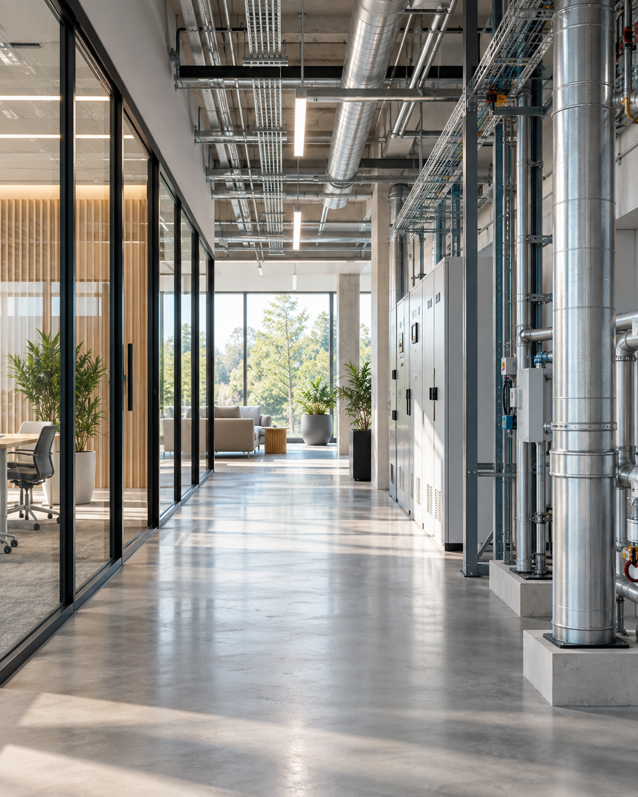

Comprendre votre site
Audit, identification des risques, lecture des usages et des contraintes.

Chaque activité impose ses propres contraintes sanitaires, réglementaires et techniques. Neature adapte ses protocoles à votre environnement, à votre niveau de risque et à vos obligations, avec un accompagnement pensé pour s’intégrer à votre fonctionnement quotidien.
Audit, identification des risques, lecture des usages et des contraintes.
Méthodes, fréquence d’intervention et niveau de suivi définis selon votre activité.
Traçabilité, prévention, rapports et ajustement continu des actions.